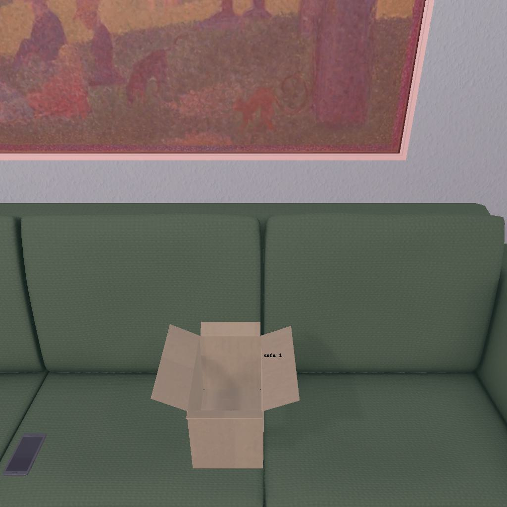

---------------------------------------------------------task: 5---------------------------------------------------------
--------------------------------------------------------------------------------------------------------------------------------------------------------------------
--------------------------------------------------------------------------------------------------------------------------------------------------------------------
Step:--------------------------------------------------------------------------0-------------------------------------------------------------------------------
----------------------------------------
VLM Prompt:
Image1:
**Instruction**
1. Analyze the provided image to identify all visible household objects, focusing on those relevant to the task description "put some book on armchair."
2. Use the analysis of the image and the task hint "The agent must find an object of the desired type, pick it up, find the correct location to place it, and put it down there." to answer the question: what is the most reasonable action in the choices for the task description "put some book on armchair"?
4. Decide and write the answer using the template: The answer is: (i): , where i is the real number. If there is no desired object in the image, search every place based on **Initial Observation** to find the object. And if no one is exactly correct, choose a similar answer.
**Initial Observation**
You are in the middle of a room. Looking quickly around you, you can see armchair (1), sofa (1), coffeetable (1), drawer (1-4), sidetable (1-3), dresser (1)
**Answer Choices**
(1): go to armchair 1
(2): go to sofa 1
(3): go to coffeetable 1
(4): go to drawer 1
(5): go to sidetable 1
(6): go to dresser 1
(7): go to drawer 2
(8): go to drawer 3
(9): go to drawer 4
(10): go to sidetable 2
(11): go to sidetable 3
**Answer**
Let's think step by step by following the instructions.
----------------------------------------
----------------------------------------
Original Response:
First, we analyze the image. We can see a sofa with a cardboard box and a cell phone on it; however, there is no armchair visible in the image. There is also a painting above the sofa. The task description mentions putting some book on an armchair, but there are no books or armchairs visible in the image.
Next, based on the task hint, the agent must find an object of the desired type (a book) and then find the correct location to place it (an armchair).
Considering the **Initial Observation**, which lists the objects in the room, we can infer that books are most likely to be found in a drawer, a sidetable, or a dresser. The most reasonable first action would be to search these locations for a book.
Since no one action is exactly correct for finding a book, we'll choose an action that is similar, which is to go to a location where books might be stored.
The answer is: (4): go to drawer 1.
----------------------------------------
----------------------------------------
>>> Refine Original VLM Response and Get Pure Action: go to drawer 1
----------------------------------------
-----------------------------------------------------------------
Running time: 8.371864080429077 seconds
Total Money: 2.3913699999999993
-----------------------------------------------------------------
-----------------------------------------------------------------
Text Observation:You arrive at loc 3. The drawer 1 is closed.
-----------------------------------------------------------------
UNSUCCEED